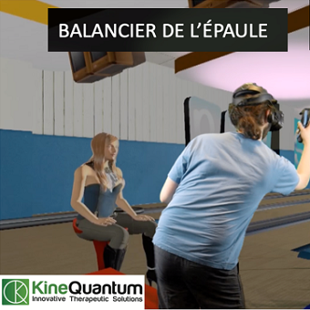
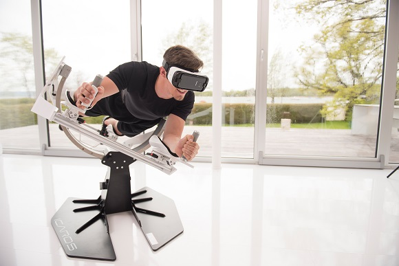
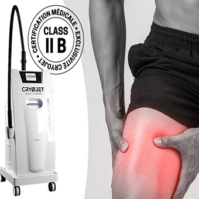

Lutter contre ses peurs et se rééduquer

Août 2018
Un rapport d'essai clinique de l'université de Oxford a été publié.
Celui-ci visait à faire une experience sur un groupe de 100 personnes séparés en deux groupes afin de montrer que la réalité virtuelle était un bon remède contre cell-ci.
Le premier servait de groupe de contrôle, il était traîté par des méthodes sans la réalité virtuelle.
Le second, lui était le groupe de test, il fut traîté par 6 séances de 30 minutes de réalité virtuelle sur deux semaines.
Le traîtement par réalité virtuelle perméttait une accès à un batiment de 10 étages contenant des exercices diversent et progressifs comme par exemple s'approcher d'une barrière de sécurité ou encore marcher sur une plateforme suspendue au dessus du vide.
Tous ces exercices étaient suivis pas un coach virtuel qui avait pour but d'aider les pascients et de les encourager.
Il était aussi conseillé aux pascients de reproduire les activité dans la vie réelle afin de les aider à progresser.
Au terme de ce programme de test, les pascients du groupe 1 eurent un HIQ*1 réduit de 1.2 points.
Quand aux pascients du groupe deux, 34 sur 49 virent leur HIQ diminué de 24.5 points.
Suite à ces résultats satisfaisant, Oxford VR fut crée, ayavnt pour but de créer des traitements automatisées en réalité virtuelle pour divers problèmes mentaux.

Article 30 septembre 2019
Cet article rédigé par Kinéquantum avait pour but d'éxplique comment la réalité virtuelle pouvait avoir un impact bénéfique sur la rééducation physique.
Dans leur article, Kinequantum utilise l'exemple de leur rééducation de l'épaule.
Cette entreprise met en place de nombreux exercices tels que l'abduction-adduction de l'épaule (mouvement de celle-ci sur l'axe verticale) grâce à un exercice où le pascient incarne un oiseau, ou encore le travail de balancier grâce à un jeu de bowling et encore bien d'autres...
Kinequantum explique aussi pourquoi la réalité virtuelle est bénéfique à leur travail.
En effet, les pascients sont plus motivés, se concentrent plus facilement et leurs gestes sont plus naturels.
Par exemple je cite :
Une vidéo explicative permet de bien comprendre leur conctionnement.
Enfin, leur article parle aussi des effets de la réalité virtuelle sur les soins des enfents gravement brûlés. Elle permet un diminution de 60% des douleurs désagréables, une diminution de 30% de douleurs aigues et une augmentation 50% du plaisirs lors du traitement.
"On a des patients qui sont kinésiophobes, qui réfléchissent beaucoup à leur mouvement, et qui sont focalisés sur leur membre douloureux. Ce type de dispositif, par le côté ludique et l’immersion dans un autre monde, permet de dépasser cette kinésiophobie."De plus, les exercices ne sont pas redondants, Kinequantum explique qu'ils ont plus de 80 exercices différents pour différents membres du corps.
Une vidéo explicative permet de bien comprendre leur conctionnement.
Enfin, leur article parle aussi des effets de la réalité virtuelle sur les soins des enfents gravement brûlés. Elle permet un diminution de 60% des douleurs désagréables, une diminution de 30% de douleurs aigues et une augmentation 50% du plaisirs lors du traitement.

Article 18 septembre 2019
Cet article rédigé par Hitech a pour but d'expliquer ces différentes sortes de rééducation grâce aux jeux.
En effet cette rééducation avec les jeux permet de créer une nouvelle façon d'aborder la rééducation plus ludiquement tout en créant des progrès plus rapides et un effort plus simple.
Ils parlent de leurs différents modèles tels que l'ICAROS Health (avec réalité virtuelle) qui permet la rééducation du mal de dos grâce à un simulateur de vol qui permet de travailler l'équilibre et la posture en totale immersion. OU encore du Vélo de cardio Interactif Expresso (avec réalité virtuelle) qui permet le travail du cardio et de rééduquer les chevilles et le genoux avec une immersion totale et 50 programmes différents.
Cet article rédigé par Hitech a pour but d'expliquer ces différentes sortes de rééducation grâce aux jeux.
En effet cette rééducation avec les jeux permet de créer une nouvelle façon d'aborder la rééducation plus ludiquement tout en créant des progrès plus rapides et un effort plus simple.
Ils parlent de leurs différents modèles tels que l'ICAROS Health (avec réalité virtuelle) qui permet la rééducation du mal de dos grâce à un simulateur de vol qui permet de travailler l'équilibre et la posture en totale immersion. OU encore du Vélo de cardio Interactif Expresso (avec réalité virtuelle) qui permet le travail du cardio et de rééduquer les chevilles et le genoux avec une immersion totale et 50 programmes différents.

Article 23 Octobre 2018
Cet article rédigé par Cryojet a pour but d'expliquer les effets de la cryogénisation.
Cet innovation permet des soins post-opératoirs.
Par exemple leur produit CRYOSKIN qui est un outil de cryothérapie localisée libère une brume d'azote sur une zone ciblée du corps afin de créer un choc thermique localisé.
Cet effet thermique permet alors des soins pour des chocs, des gonflements, des tensions musculaires, de l'arthrose et bien plus...
Il possède un capteur permettant de gérer le choc thermique et la distance de sécurité entre la zone de peau et la sortie d'azote.
Leur article explique que l'on peut coupler les soins de cryothérapie sur corps entier et localisée.
Cela permet entre autre de créer une cicatrisation plus rapide pour les inflammations, les entorses, les chocs, les récupérations postes sportives etr autres...
Cet innovation permet des soins post-opératoirs.
Par exemple leur produit CRYOSKIN qui est un outil de cryothérapie localisée libère une brume d'azote sur une zone ciblée du corps afin de créer un choc thermique localisé.
Cet effet thermique permet alors des soins pour des chocs, des gonflements, des tensions musculaires, de l'arthrose et bien plus...
Il possède un capteur permettant de gérer le choc thermique et la distance de sécurité entre la zone de peau et la sortie d'azote.
Leur article explique que l'on peut coupler les soins de cryothérapie sur corps entier et localisée.
Cela permet entre autre de créer une cicatrisation plus rapide pour les inflammations, les entorses, les chocs, les récupérations postes sportives etr autres...